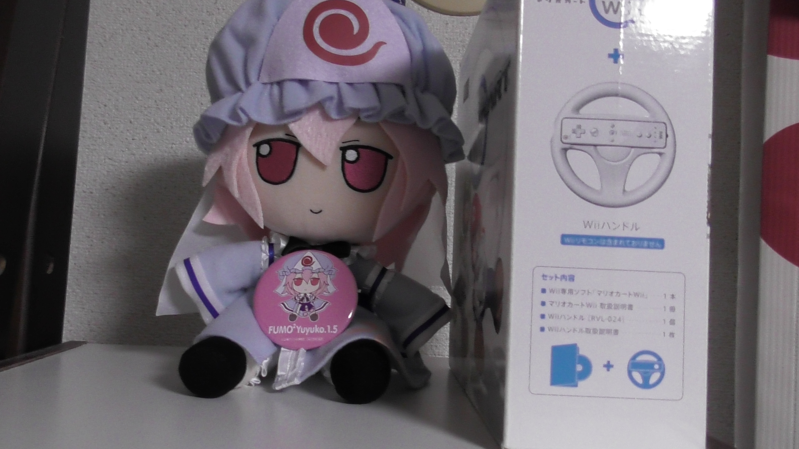

東方図鑑HTML
幻想郷資料館
製作者 きくっち
2026年6月3日
=======================
東方紅魔郷
=======================
ストーリー
ある夏の日、幻想郷が赤い霧に覆われた
===================
キャラクター
===================
主人公 博麗霊夢 霊気を操る程度の能力
主人公 霧雨魔理沙 魔法を使う程度の能力
一面ボス ルーミア 闇を操る程度の能力
二面中ボス 大妖精
二面ボス チルノ 冷気を操る程度の能力
三面ボス 紅美鈴 気を使う程度の能力
四面中ボス 小悪魔
四面ボス パチュリー・ノーレッジ 月火水木金土日を操る程度の能力
五面ボス 十六夜咲夜 時間を操る程度の能力
六面ボス レミリア・スカーレット 運命を操る程度の能力
EXボス フランドール・スカーレット ありとあらゆるものを破壊する程度の能力
===========================
東方妖々夢
===========================
ストーリー
五月なのに春が来ない
===============================
キャラクター
===============================
一面ボス レティ・ホワイトロック 寒気を操る程度の能力
二面ボス 橙 妖術を扱う程度の能力
三面ボス アリス・マーガトロイド 魔法を扱う程度の能力、人形を扱う程度の能力 初登場作品は東方怪綺談なんです
四面中ボス リリーホワイト 春が来たことを伝える程度の能力
四面ボス ルナサ・プリズムリバー 手足を使わずに楽器を演奏する程度の能力、鬱の音を演奏する程度の能力
四面ボス メルラン・プリズムリバー 手足を使わずに楽器を演奏する程度の能力、躁の音を演奏する程度の能力
四面ボス リリカ・プリズムリバー 手足を使わずに楽器を演奏する程度の能力、幻想の音を演奏する程度の能力
五面ボス 魂魄妖夢 剣術を扱う程度の能力
六面ボス 西行寺幽々子 死を操る程度の能力
EXボス 八雲藍 式神を操る程度の能力
Phantasmステージボス 八雲紫 境界を操る程度の能力
===========================
東方永夜抄
===========================
ストーリー
満月のはずなのに月が欠けている
==========================
キャラクター
==========================
一面ボス リグル・ナイトバグ 蟲を操る程度の能力
二面ボス ミスティア・ローレライ 歌で人を狂わせる程度の能力
三面ボス 上白沢慧音 歴史を食べる（隠す）程度の能力（人間時）、歴史を創る程度の能力（動物化時）
四面ボス 博麗霊夢or霧雨魔理沙
五面中ボス 因幡てゐ 人間を幸運にする程度の能力
五面ボス 鈴仙・優曇華院・イナバ 狂気を操る程度の能力
六面Aルートボス 八意永琳 あらゆる薬を作る程度の能力、天才
六面Bルートボス 蓬莱山輝夜 永遠と須臾を操る程度の能力
EXボス 藤原妹紅 老いることも死ぬことも無い程度の能力
===========================
東方萃夢想
===========================
ストーリー
宴会を行うたびに不穏な妖気が高まっていた
===============================
キャラクター
===============================
伊吹萃香 能力：密と疎を操る程度の能力
=========================
東方花映塚
=========================
ストーリー
まだ春なのに一年中の花が咲いた
=====================
キャラクター
=====================
メディスン・メランコリー 毒を使う程度の能力
風見幽香 花を操る程度の能力 初登場作品は東方幻想郷なんです。
射命丸文 風を操る程度の能力
小野塚小町 距離を操る程度の能力
四季映姫・ヤマザナドゥ 白黒はっきりつける程度の能力
====================
東方風神録
====================
ストーリー
博麗神社が営業停止命令を出される
================
キャラクター
================
一面中ボス 秋静葉 紅葉を司る程度の能力
一面ボス 秋穣子 豊穣を司る程度の能力
二面ボス 鍵山雛 厄をため込む程度の能力
三面ボス 河城にとり 水を操る程度の能力
四面中ボス 犬走椛
四面ボス 射命丸文 風を操る程度の能力
五面ボス 東風谷早苗 奇跡を起こす程度の能力
六面ボス 八坂神奈子 乾を創造する程度の能力
EXボス 洩矢諏訪子 坤を創造する程度の能力
===================
東方文花帖
===================
ストーリー
天狗の射命丸文が自ら発行する新聞
「文々。新聞」のネタを集めるため、幻想郷の様々な妖怪たちを取材する。
.
.
新キャラはいないため、時間があったりしたら、レベルごとのを書きます。
====================
東方緋想天
====================
ストーリー
調査中
=========================
キャラクター
=========================
永江衣玖 空気を読む程度の能力
比那名居天子 大地を操る程度の能力
====================
東方地霊殿
====================
ストーリー
間欠泉が出てきた
==========================
キャラクター
==========================
一面中ボス キスメ 鬼火を落とす程度の能力
一面ボス 黒谷ヤマメ 病気(主に感染症)を操る程度の能力
二面ボス 水橋パルスィ 嫉妬心を操る程度の能力
三面ボス 星熊勇儀 怪力乱神を持つ程度の能力
四面ボス 古明地さとり 心を読む程度の能力
五面ボス 火焔猫燐（かえんびょうりん）通称お隣 死体を持ち去る程度の能力
六面ボス 霊烏路空（れいうじうつほ）
EX中ステージ 東風谷早苗 東方風神録ページ参照
EXステージ 古明地こいし 無意識を操る程度の能力
=========================
東方星蓮船
=========================
ストーリー
正体不明の船が飛んでる
=====================
キャラクター
=====================
一面ボス、五面中ボス ナズーリン 探し物を探し当てる程度の能力
二面ボス、ＥＸ中ボス 多々良小傘 人間を驚かす程度の能力
三面ボス 雲居一輪 入道を使う程度の能力 雲山 形や大きさを自在に変える事が出来る程度の能力
四面ボス 村紗水蜜(むらさみなみつ) 水難事故を引き起こす程度の能力
五面ボス 寅丸星 財宝が集まる程度の能力
六面ボス 聖白蓮 魔法を使う程度の能力(身体能力を上げる魔法を得意とする)
ＥＸボス 封獣ぬえ （ほうじゅうぬえ）正体を判らなくする程度の能力
=======================
東方非想天則
=======================
調査中
�=======================
キャラクター
=======================
新キャラが一人くらいしかいなくよくわからないため気が向いたら後から記入
=======================
ダブルスポイラー
=======================
ストーリー？というかゲーム内容
天狗の新聞記者、射命丸文が妖怪、人間、
その他を執拗にカメラで撮影し、叩きのめしてネタ帳に書き留める
==================
キャラクター
==================
姫海棠はたて 能力 念写をする程度の能力
======================
妖精大戦争
======================
ストーリー
チルノの家が破壊された
===================
キャラクター
===================
新キャラがいないので気が向いたら書きます。
=======================
東方神霊廟
=======================
ストーリー
霊が大量発生
=================
キャラクター
=================
一面ボス 西行寺幽々子 妖々夢参照してください。
二面ボス 幽谷響子 音を反射させる程度の能力
三面中ボス 多々良小傘 星蓮船参照
三面ボス 宮古芳香 何でも喰う程度の能力
四面中ボス、霍青娥 四面ボス 芳香＆霍青娥 壁をすり抜けられる程度の能力
五面中ボス 蘇我屠自古 雷を起こす程度の能力
五面ボス 物部布都 風水を操る程度の能力
六面ボス 豊聡耳神子 十人の話を同時に聞くことが出来る程度の能力
EX中ボス 封獣ぬえ 星蓮船参照してください。
EXボス 二ッ岩マミゾウ 化けさせる程度の能力
==== 東方年表 ====
東方作品年表
平成8年1996年 東方靈異伝
平成9年1997年 東方封魔録
平成9年1997年 東方夢時空
平成10年1998年 東方幻想郷
平成10年1998年 東方怪綺談
2002 年よりも前は旧作です
平成14年2002 年 東方紅魔郷
平成15年2003 年 東方妖々夢
平成16年2004 年 東方永夜抄 東方萃夢想
平成17年2005 年 東方花映塚
平成19年2007 年 東方風神録 東方文花帖
平成20年2008 年 東方緋想天 東方地霊殿
平成21年2009 年 東方星蓮船 東方非想天則
平成22年2010 年 ダブルスポイラー 妖精大戦争
平成23年2011 年 東方神霊廟
平成25年2013 年 東方心綺楼 東方輝針城
平成26年2014 年 弾幕アマノジャク
平成27年2015 年 東方深秘録 東方紺珠伝
平成29年2017 年 東方憑依華 東方天空璋
平成30年2018 年 秘封ナイトメアダイアリー
平成31年,令和元年2019 年 東方鬼形獣
令和3年2021 年 東方虹龍洞 東方剛欲異聞
令和4年2022 年 バレットフィリア達の闇市場
令和5年2023 年 東方獣王園
令和7年2025 年 東方錦上京
